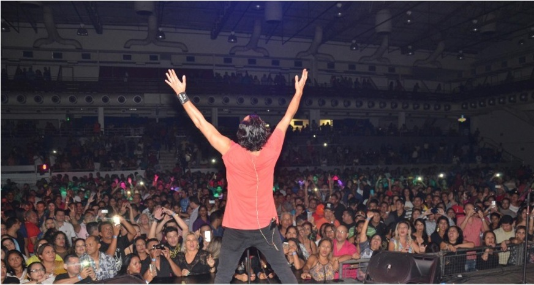

Opinião dos seus fãs
Sed ut perspiciatis unde omnis iste natus error sit voluptatem accusantium doloremque laudantium, totam rem aperiam, eaque ipsa quae ab illo inventore veritatis et quasi architecto beatae vitae dicta sunt explicabo.
Sed ut perspiciatis unde omnis iste natus error sit voluptatem accusantium doloremque laudantium, totam rem aperiam, eaque ipsa quae ab illo inventore veritatis et quasi architecto beatae vitae dicta sunt explicabo.
Sed ut perspiciatis unde omnis iste natus error sit voluptatem accusantium doloremque laudantium, totam rem aperiam, eaque ipsa quae ab illo inventore veritatis et quasi architecto beatae vitae dicta sunt explicabo.
Paula Janete - Valença-Ba
Últimas notícias
-

'Double You' canta "Please, Don't Go."
Encontro com Fátima Bernardes teve recorde de audiência em todo o Brasil.Leia mais »
-

'Double You' marca presença em 'Verão 90' e deixa fãs nostálgicos; reveja a cena! Verão 90 acabou de estrear e já está deixando todo mundo com saudade dessa década icônica. No capítulo dessa quarta, 30/1, quem teve sua infância ou adolescência marcada pelos hits de Double You ganhou uma dose extra de nostalgia. Leia mais »
-
'Double You' agita Vila Jardim dos Namorados em festival.
A banda é famosa mundialmente por ter emplacado vários hits dos anos 90. Uma dessas músicas foi 'Please Don't Go', sucesso em 1992, regravada do grupo KC and the Sunshine Band. No repertório, músicas como 'Looking At My Girl', 'We All Need Love' e 'She´s Beautiful' estarão presentes.Leia mais »